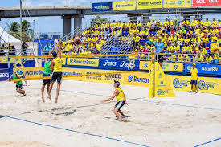

Vôlei
O voleibol ou vôlei é um esporte praticado entre duas equipes numa quadra
retangular (aberta ou fechada). Ela é dividida por uma rede colocada verticalmente sobre a linha central.

Regras do voleibol.
- Cada equipe possui um técnico;
- Uma partida é constituída de 5 sets;
- Cada set tem um máximo de 25 pontos com uma diferença mínima de 2 pontos;
- Em caso de empate no set no final (24 x 24), a partida continua até que a dife-
rença de dois pontos seja atingida (26 x 24, 27 x 25, etc.);
- Após o saque, a equipe só pode tocar três vezes na bola;
- Ganha a equipe que vencer três sets;
- Se houver empate nos sets (2x2) o 5º set será decisivo.O vôlei de quadra é
- É formado por duas equipes com 6 jogadores em cada. No total, são 12 jogadores.
Existem ainda 6 jogadores reserva.
- Além do vôlei de quadra, há também o vôlei de praia. Diferente da quadra, o de
praia é jogado na areia e contém somente quatro jogadores, sendo dois de cada
equipe.